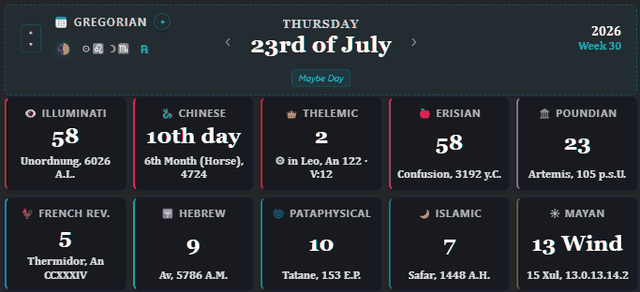

One date, read by eleven calendars at once, each with its own year zero and its own idea of what time counts for. The moon and the sky come with it.
It opens on Robert Anton Wilson’s birth and death. Change either date and every count follows.
Click a line for why that calendar exists, and where to read more.
One integer day count feeds all eleven. Every figure here comes off that count.
The arithmetic follows Dershowitz and Reingold’s Calendrical Calculations; the four systems that track the sky use compact Meeus astronomy. No date library, no floating-point drift in the day arithmetic, and each calendar fails on its own: if one ever broke it would show a dash while the other ten carried on. The plugin and its test suite read public on GitHub.
“How to Live Eleven Days in 24 Hours” Robert Anton Wilson, Cosmic Trigger, 1977
Wilson dated his writing in half a dozen calendars at once, and not as a party trick. He called it model agnosticism: every calendar draws a map of time, and no map counts as the territory.
The Gregorian date feels like plain reality until it sits beside ten alternatives, each internally consistent, each once the obvious reckoning for millions of people. Watch the same Monday register as a day in Confusion 3192, as the Sun in Scorpio in the Aeon of Horus, and as 5 Monkey on a 260-day round, and the frame quietly loosens.
The page above runs the plugin’s own engine. The plugin itself puts all eleven in your vault, beside your notes, with the moon and the sky where you write.

Drop one code fence into a note and today fans out into eleven todays. Click a card for that calendar’s story, the moon glyph for the lunar cycle, the zodiac chip for where every body stands.
Get Eleven Days on GitHubFree, open source, and no account anywhere.
I build these one at a time and give them away. Nothing here sells anything.
No list exists yet. Write to the address below and I add you to the first one.